Real application components and existing fictional task data. Desktop 1440 × 1000; mobile 390 × 844. Click an image to inspect it at full resolution. Implementation and verification report.
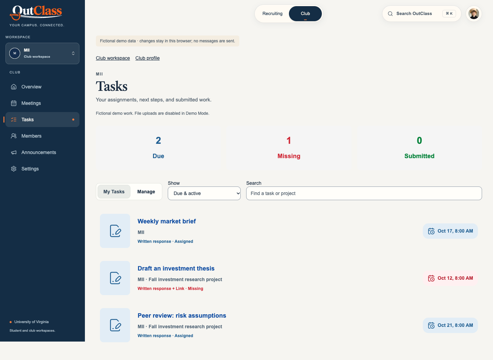
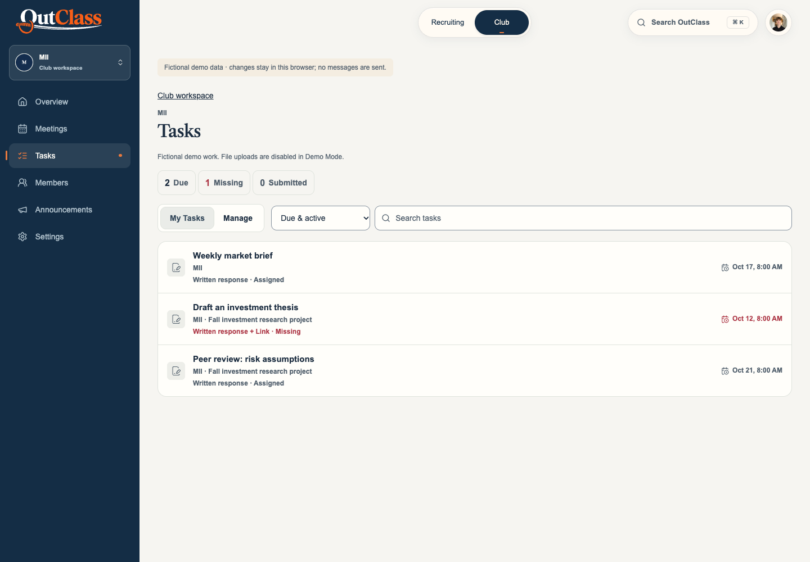
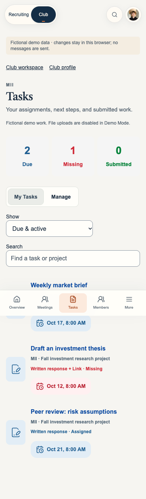
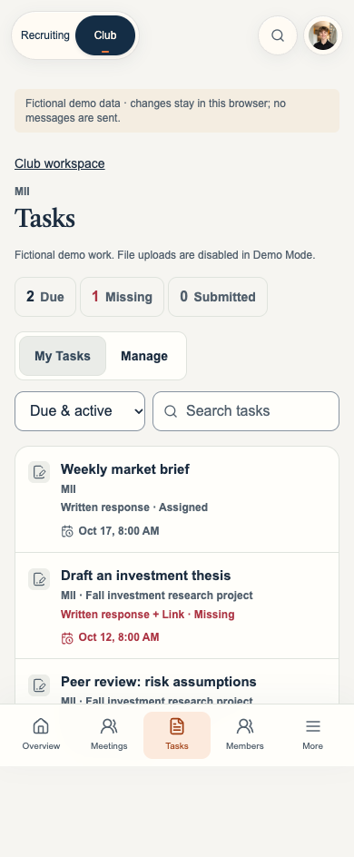
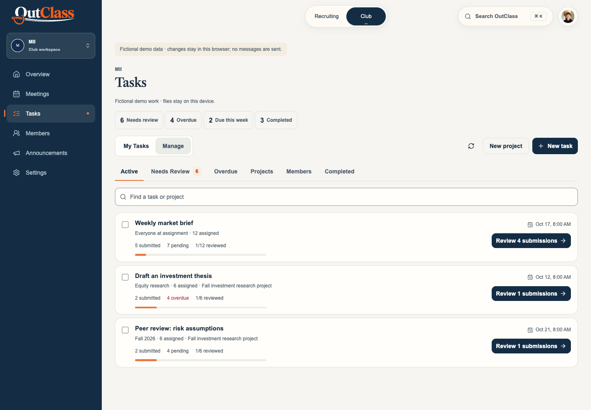
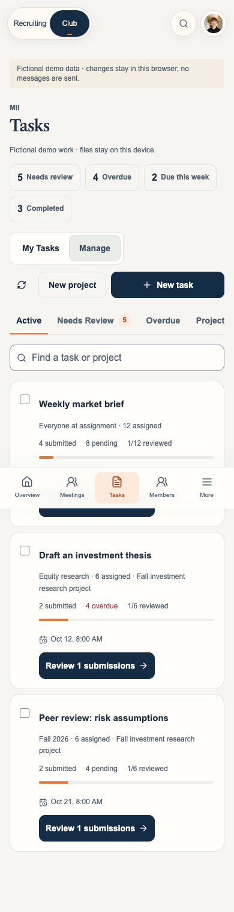
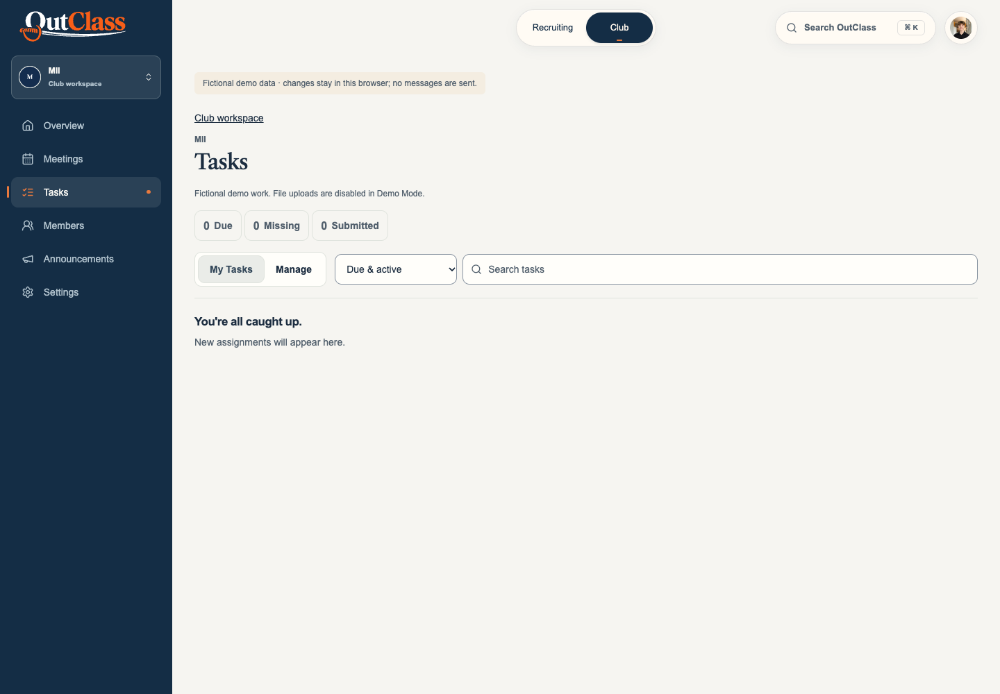
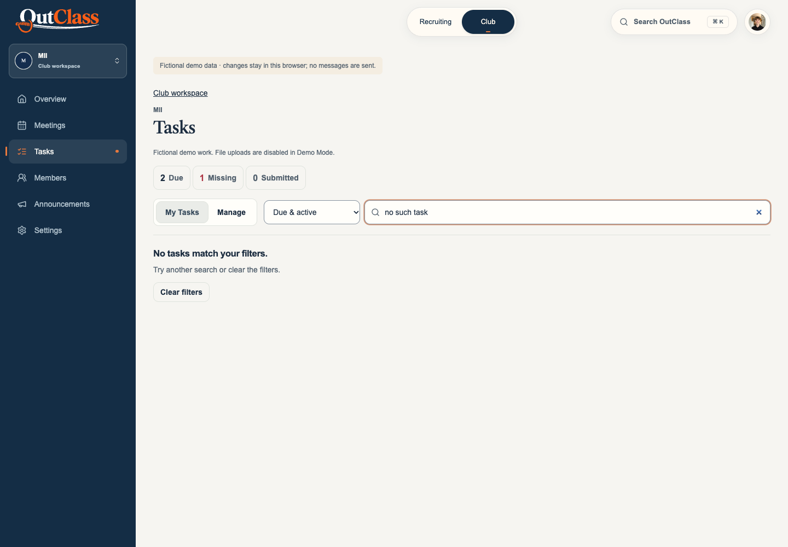
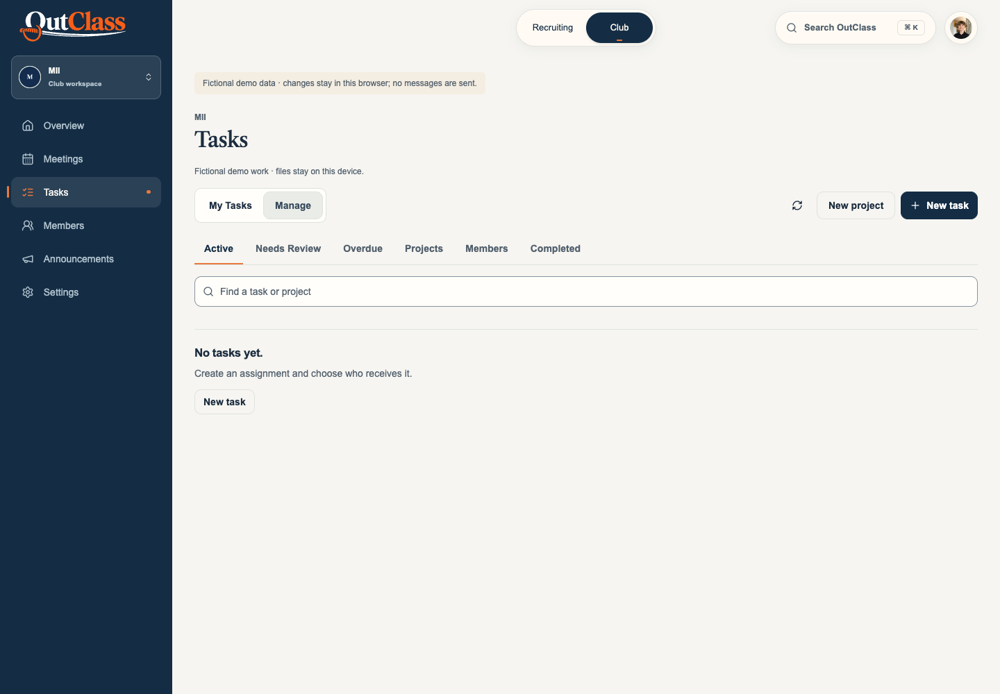
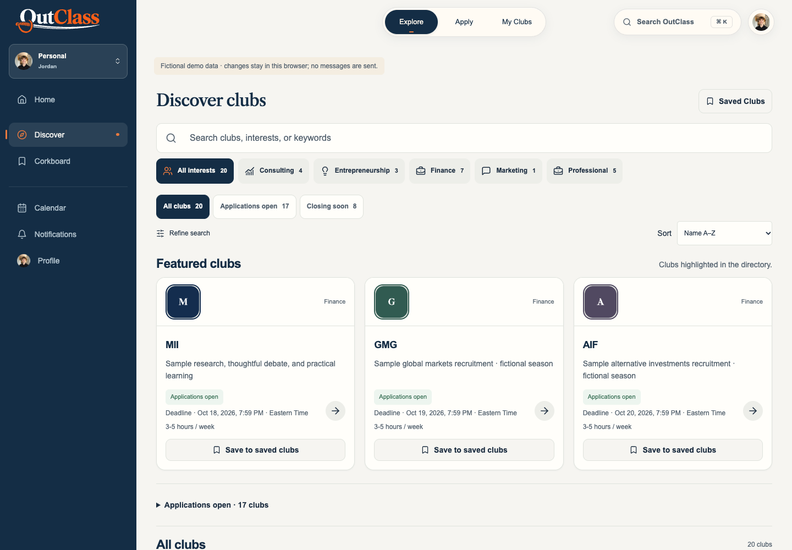
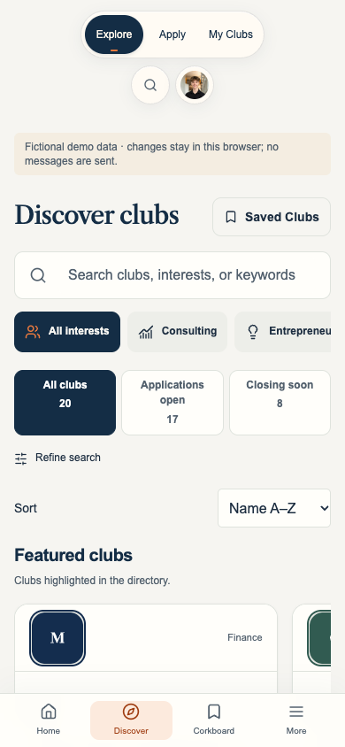
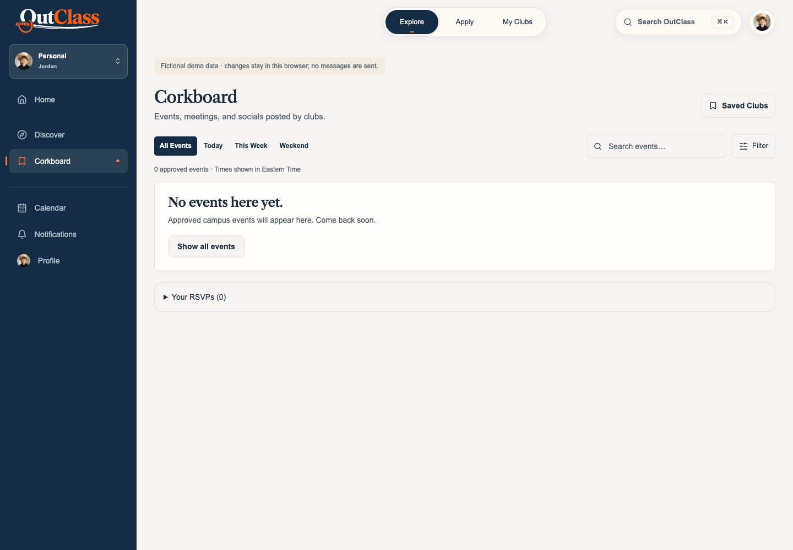
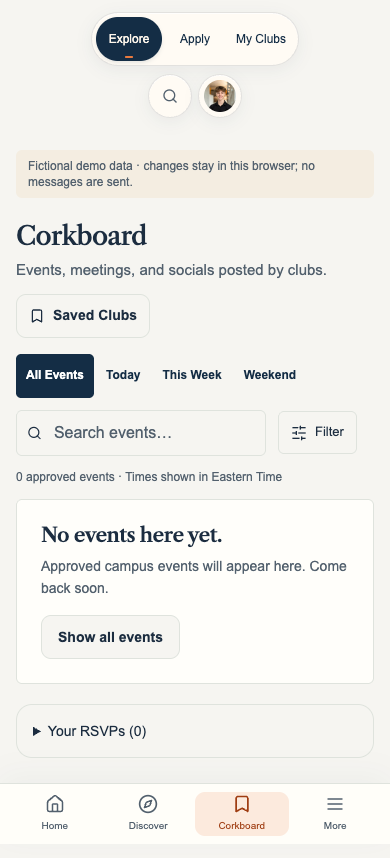